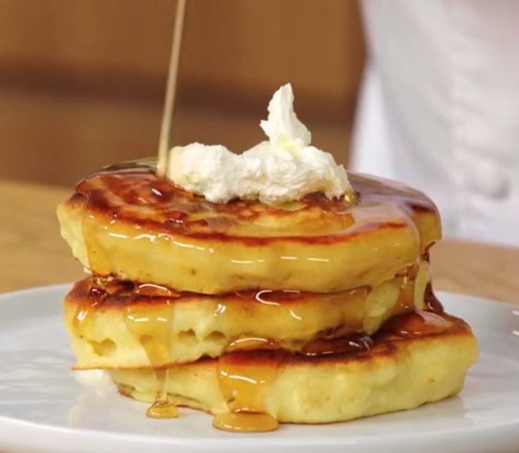

Perfect Pancakes

When to make these pancakes
These are the PERFECT pancakes for when you're looking for the best
traditional pancakes. You can add-in mixins like blueberries or
chocolate chips, but this should be your standard pancake recipe.
Makes: 18 pancakes
Ingredients
- 3 cups all-purpose flour
- 1/4 cup sugar
- 1 1/2 tsp salt
- 1 TBSP baking powder
- 1 1/2 tsp baking soda
- 2 1/4 cups milk
- 1/4 cup vegetable oil (or another neutral oil)
- 1 TBSP vanilla extract
- 1/4 cup apple cider vinegar
- 3 eggs
Instructions
- Whisk dry ingredients well in medium bowl: flour, sugar, salt,
baking powder, and baking soda.
- Whisk wet ingredients in small bowl or large measuring cup:
milk, oil, vanilla, apple cider vinegar, an eggs.
- Pour the wet ingredients into the dry ingredients and mix. Do
not overmix, fold the wet ingredients in until well combined. There
will be lumps, leave it alone. Do not mix it anymore.
- Heat griddle or pan. When hot, add a heaping dollop of salted
butter and spread it around.
- Scoop the batter with a large spoon, trying not to disturb the
rest of the batter an drop it onto the griddle. Don't stir the
batter!
- Flip the pancakes when they are set on the bottom and bubbles
start to pop through the top.
- Do not press on the pancakes with your spatula. Pancakes are
done when you push down with a finger and they spring back.
- Serve with salted butter and maple syrup.
Back to more pancake recipes!